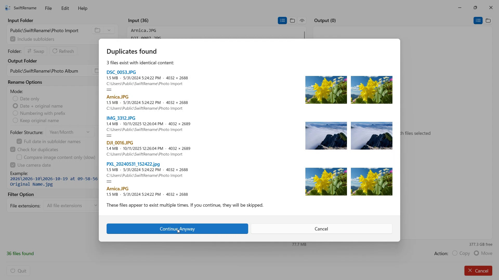

Renomeie centenas de fotos e arquivos de uma vez — pela data da câmera, numerados ou em pastas por ano e mês. Duplicados são encontrados e ignorados automaticamente.


O SwiftRename é uma ferramenta para renomear e organizar vários arquivos ao mesmo tempo. Você pode renomear arquivos por data, numerá-los, adicionar um prefixo e organizá-los automaticamente em uma estrutura de pastas.
- Requer Windows 11 ou posterior
- 24 idiomas
- Suporte: SwiftAppsBavaria@gmx.net